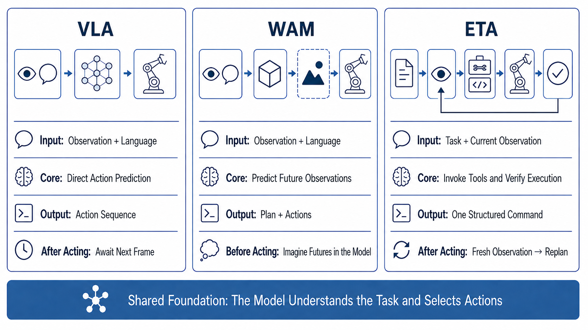
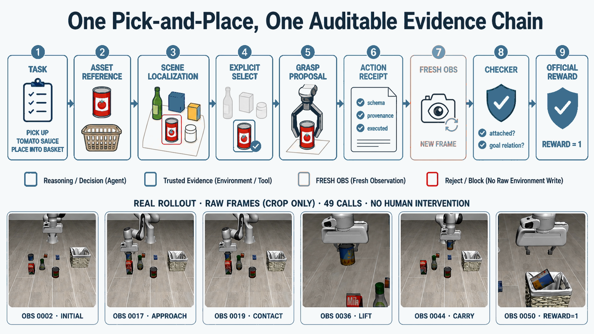
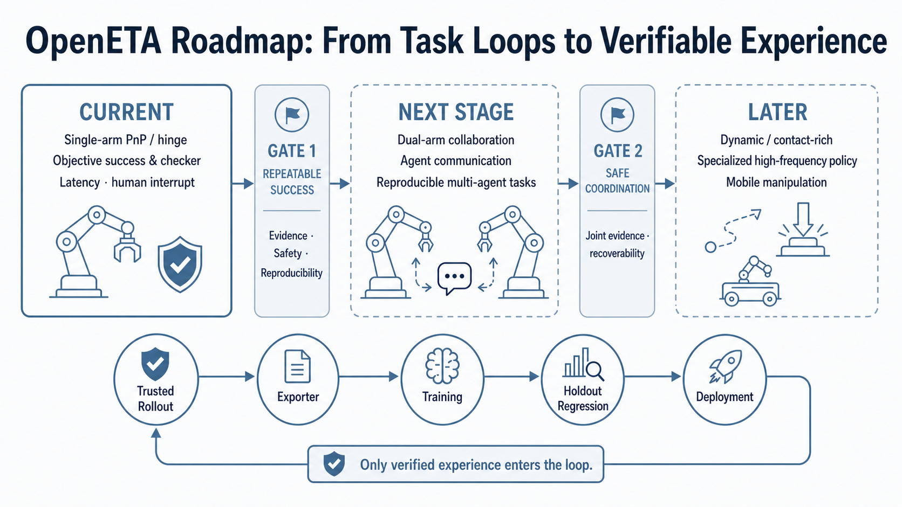

제출: 2026년 8월 4일 · 벤치마크 LIBERO(40 tasks × 10 seeds) · 실로봇 UR5e + Robotiq
한 줄 요약 (TL;DR)
End-to-end VLA(Vision-Language-Action, 관찰-언어-행동을 하나의 신경망이 통째로 매핑) 방식이 낯선 태스크로의 일반화·긴 상호작용에서의 통제성이 부족하다는 문제의식에서 출발. 저자들은 Planner–Interface–World 3분할 ETA(Embodied Task Agent) 패러다임과 오픈소스 구현체 OpenETA(툴 44개, LIBERO/UR5e 어댑터)를 제안. 핵심은 "한 번에 하나의 세계 변경 액션 → 새 관찰 후 다음 결정"이라는 런타임 불변식(runtime invariant)이며, Interface가 안전·근거·권한을 게이트한다. LIBERO 40태스크·400에피소드에서 풀 OpenETA는 14.0%(56/400), Codex용 3툴 축소본은 GPT-5.6 Sol에서 Pass@5 90.0%(117/130) 달성. 자체 진화(self-evolution) 후보는 승격 게이트를 통과한 사례 0건으로, "성능이 아닌 통제 가능한 상한"을 실증.
1배경 · 문제의식
로봇을 위한 "ChatGPT급 도약"을 만들려면, 훈련 분포 밖의 낯선 태스크에서도 작동하고(일반화), 긴 상호작용 내내 통제(controllability)가 유지되며, 경험으로부터 학습·개선이 가능해야 한다. 그러나 현재 지배적 방법인 end-to-end VLA(관찰·언어를 입력받아 연속 액션을 통째로 회귀하는 단일 신경망)는 다음 문제를 안는다.
분포 밖(out-of-distribution) 태스크에서 급격히 실패 — 원인 규명이 어렵다(블랙박스).
연속 액션 스트림이라 각 단계 근거(evidence)가 남지 않아, 안전 승인·재현·롤백이 힘들다.
파인튜닝만이 개선 수단이므로 실 사용 중 학습·수정이 사실상 불가.
저자들은 대안으로 "에이전트가 툴(tool)을 이산적으로 호출하고 매 호출마다 결과를 검증"하는 방식을 취한다. 이는 대형 언어 모델(LLM) 계열에서 이미 검증된 tool-use 에이전트 사고를 로봇 도메인에 이식한 것이다.
2핵심 Contribution
ETA 패러다임(Planner–Interface–World) — 임무 이해·기억·다음 명령 제안은 Planner, 명령 구조·안전·전제조건 검증과 실행 게이트는 Interface, 실제 실행과 새 관찰 반환은 World가 담당하도록 역할을 엄격히 분리. 매 스텝 새 관찰(fresh observation)을 요구해 상태-의존적 결정의 근거를 강제한다.
OpenETA 오픈소스 구현 — 교체 가능한 Planner, 조합 가능한 Tool·Skill 44종 레지스트리, 감사(audit) 가능한 메모리, 재현 가능한 trajectory(궤적)를 갖춘 시스템. 시뮬레이터(LIBERO)와 실 로봇(UR5e + Robotiq)에 동일 인터페이스로 붙는다.
OpenETA for Codex(경량 플러그인) — observe / mark_point / move_to 3개 툴만 노출하는 축소 버전. 코드-생성 LLM(예: Codex 계열)에 최소 변경으로 부착 가능한 형태로 검증.
제약 있는 자체 진화(Constrained Self-Evolution) — 실행 기록(trajectory)으로부터 Skill/플레이북 후보를 자동 제안하되, D·Q·R·H 4단 게이트 통과 시에만 실행 권한을 승격. 실험 상 통과 사례 0건으로, 개선이 아닌 통제된 상한을 보여준다.
LIBERO 40태스크 표준 벤치와 실 UR5e 데모 공개 — 시뮬·실기 양쪽에서 재현 가능한 프로토콜과 실패 라벨 체계 제공.
3Method
3.1 3분할 아키텍처와 런타임 불변식
ETA는 태스크 수준(task-level) 에이전트를 세 역할로 분해한다.
Agent(Planner)
자연어 목표를 해석하고 working memory(현재 관찰·과거 결과·미완 의무를 담는 작업 기억)를 유지하며, 매 스텝 단 하나의 툴을 고른 구조화된 명령 ct를 낸다.
Interface
명령의 스키마·안전 조건·전제(evidence)를 검사하고, 실행 권한(gate)을 승인/거부한다. 툴 디스패치와 실행 게이팅을 소유.
World
시뮬레이터/실 로봇 백엔드에서 실제 실행하고, 툴 결과·환경 영수증(receipt)·새 관찰을 돌려준다.
런타임 불변식(핵심): "한 번에 하나의 세계 변경(world-mutating) 액션만 실행하고, 반드시 새 관찰을 받은 뒤에야 다음 상태-의존적 결정을 한다." 이 규칙이 무너지면 "몰라도 밀어붙이는" 실패가 폭증한다. 왜: 로봇은 시뮬 배치 실행과 달리 물리적 되돌리기 비용이 크다. 관찰→행동을 매 스텝 잇는 것이 검증·안전 승인·롤백의 최소 단위다.
수식으로는 다음 두 줄로 요약된다.
계획:ct = πagent(g, ot, mt) — 목표 g, 현재 관찰 ot, 메모리 mt로부터 다음 명령을 낸다.
실행 게이팅:at = dispatch(ct) if gate(ct, ot, mt)=pass; else ∅ — Interface 게이트가 통과할 때만 액션이 나간다. 통과 못하면 아무 일도 일어나지 않는다(안전 기본값).
3.2 Tool·Skill·AtomAction의 개념 위계
ETA는 다음 세 층의 개념을 엄격히 구분한다.
Tool — 호스트가 등록한 원자 기능. 파라미터·리턴 계약(schema)이 안정적이며 사이드 이펙트 클래스가 선언된다: read_only, planning(계획만·세계 미변경), bookkeeping(메모리 갱신), world_mutating(세계 변경).
Skill — "어떻게 추론·확인·복구할지"를 서술한 수정 가능한 텍스트 지침. 절대 숨겨진 액션 시퀀스를 실행하지 않는다(항상 툴 호출로 귀결).
AtomAction — 물리적 세계를 실제로 바꾸는 실행 원자(world_mutating 툴의 부분집합). Skill 텍스트는 AtomAction을 우회할 수 없다.
왜 이렇게 나누나: "LLM이 자기 지시문을 바꿔 새 능력을 학습"하는 자유도를 열되, 실제 세계에 영향을 주는 층(AtomAction)은 늘 검증된 툴 계약을 통해서만 지나가도록 벽을 세우기 위해서다. 자기 진화가 "잘못된 방향으로 세지지" 않게 하는 안전 장치.
3.3 툴 레지스트리(44종 개요)
OpenETA가 기본 제공하는 툴은 다섯 범주.
지각(Perception) — observe(요청 뷰의 실시간 이미지), molmopoint·sam3(픽셀 지시·분할), enhance_depth, retrieve_asset_reference.
파지·배치 계획 — grasp_pose_estimate, anygrasp, contact_graspnet, anyplace.
에이전트 지원 — save_memory/get_memory/compact_memory, python_exec, register_skill.
3.4 경량 버전: OpenETA for Codex (3툴)
기존 코드-생성 LLM(예: Codex 스타일)에 최소 인터페이스로 붙이기 위한 축소본. 노출 툴은 단 셋.
observe — 요청한 카메라 뷰의 라이브 이미지 반환.
mark_point — 2D 픽셀 클릭을 3D 월드 좌표로 변환(멀티뷰 또는 단일뷰 모드).
move_to — 그리퍼를 지정 위치·자세로 이동, 미리보기(preview) 옵션 지원.
왜 3개로 줄이나: 툴 수가 많을수록 LLM의 라우팅·스키마 준수 오류가 급증한다. Codex 같은 코드 특화 모델은 이미 파이썬 실행 능력이 있어, 세계와의 접점만 표준화해도 충분하다는 가설.
3.5 Evidence Chain(근거 사슬)과 신뢰 영수증
Interface는 실행 결과를 받아 host-attested provenance(호스트가 서명한 출처), execution ID, session ID가 현재 턴과 일치할 때만 리워드·종결 신호를 유효로 인정한다. 저수준 관절 벡터, 컨트롤러 확장, 내부 환경 객체는 Planner에 숨겨진다 — LLM이 "지어낼" 여지를 없앤다.
3.6 제약 있는 자체 진화(Constrained Self-Evolution)
실행 궤적(trajectory)에서 Skill 편집·정확 태스크 플레이북·스테이지 델타 세 유형의 업데이트를 후보로 자동 제안한다. 승격 규칙은 4단계 AND 조건.
D — Deterministic check: 후보가 스키마·안전 불변식을 어기지 않아야 함.
Q — Isolated review: 후보를 만든 문맥과 격리된 컨텍스트에서 재검토.
R — Same-task replay: 원 태스크에서 동일 성공 재현.
H — Held-out evaluation: 페어링된 홀드아웃 태스크에서 이득이 회귀 없이 관측될 것.
승격 규칙: Promote(u) = D(u) ∧ Q(u) ∧ R(u) ∧ H(u). 어떤 업데이트도 월드 좌표 저장·역사적 포즈 재사용·원자 툴 재정의·안전 검사 우회를 할 수 없다.
3.7 평가 지표 Pass@k
Si@k = max1≤j≤k ri,j, Pass@k = (1/N) Σ Si@k — 태스크 i의 k개 시드 중 하나라도 성공하면 1, 전 태스크 평균. ri,j는 시드 j의 공식 verdict(0/1).
4실험 결과
4.1 풀 OpenETA — LIBERO 고정 매트릭스 (40 태스크 × 10 시드 = 400 에피소드)
지표
결과
에피소드 성공
56/400 (14.0%)
1회 이상 성공한 태스크 수
18/40
지배적 실패 라벨: episode_timeout
215/344 (62.5%)
unattended_ask_human
66/344 (19.2%)
max_turns
35/344 (10.2%)
status_report_without_reward
24/344 (7.0%)
Suite별 세분: Spatial 8/100(8.0%), Object 26/100(26.0%), Goal 21/100(21.0%), Long/LIBERO-10 1/100(1.0%). 긴 지평(long-horizon) 태스크가 특히 어려움.
가장 강한 Planner(Sol)는 첫 시드만으로 92개를 풀며, 5시드 내에 117/130 = 90.0%를 통과. 툴을 3개로 좁혔음에도 Planner 자체 성능이 압도적으로 결과를 좌우.
4.3 실 로봇 데모 (UR5e + Robotiq 2F 그리퍼)
정량 성공률은 없고 정성적 데모. 스펀지-트레이 이동을 다수 웨이포인트(waypoint)로 완주하는 시퀀스가 촬영됨. 개발 중 파악된 실 로봇 병목:
RealSense 깊이 완성이 시뮬 깊이보다 훨씬 성기다 — enhance_depth 필요.
측방 파지(lateral grasp) 궤적에서 보호 정지(protective stop) 유발 사례.
캘리브레이션·제어 주기·비상 정지·페이로드 한계는 기기별 검증 필요.
저자 강조: 실기 데모는 인터페이스 통합 검증이지 태스크 성공률 벤치가 아니다. 시뮬 성공이 실기 안전을 담보하지 못함을 명시.
5Ablation — 제약 있는 자체 진화 결과
승격 게이트 통과 후보: 0건. 어떤 자동 제안 업데이트도 D·Q·R·H 4단을 모두 통과하지 못했다.
저자 해석: "현재의 범용 모델들은 물리적 액션 뒤에 반드시 관찰·수정한다는 습관을 신뢰할 만큼 채택하지 않는다." → 자체 진화 실패의 근본 원인은 계획자의 습관 결핍.
본 결과는 성능 개선 데모가 아니라 통제된 상한 데모. "잘못된 학습이 실행 권한을 얻는 것"을 시스템이 자동으로 막았음을 보이는 것이 목적.
왜 통제가 우선인가: 로봇 자체 진화는 실패 시 물리 파손·안전 사고로 이어질 수 있다. "성능이 나쁠 때는 학습 자체를 거부"하도록 게이트를 세우는 편이 장기적으로 안전한 확장성을 준다는 설계 철학.
6핵심 Figure / Table

Figure — OpenETA paradigm. Planner(계획·기억), Interface(검증·게이트), World(실행·관찰)의 3분할과 매 스텝의 명령→게이트→실행→새 관찰 루프. "한 번에 하나의 세계 변경, 그 다음 반드시 새 관찰"이 시각적 축. (출처: arXiv:2608.03924)

Figure — Evidence Chain. Interface가 실행 결과에 붙이는 host-attested provenance·execution ID·session ID의 흐름. Planner는 저수준 관절 벡터나 컨트롤러 내부를 못 보고, 오직 서명된 요약만 받는다. (출처: arXiv:2608.03924)

Figure — OpenETA roadmap. 현재 단일 팔 시뮬 조작 → 인프라 정비 → 양팔·접촉 풍부 태스크 → 이동 조작·다중 에이전트 → 학습 루프 통합의 스테이지. 각 스테이지는 반복 성공·안전·재현·복구가 만족될 때만 다음으로 넘어간다. (출처: arXiv:2608.03924)
Figure — UR5e + Robotiq 실 로봇 데모. 스펀지를 잡아 트레이로 옮기는 성공 키프레임. 정량 벤치가 아닌 인터페이스 통합·안전 게이트 동작 확인이 목적. (출처: arXiv:2608.03924)
승격 규칙(원문 요지) — Promote(u) = D(u) ∧ Q(u) ∧ R(u) ∧ H(u). 후보 업데이트는 (D) 스키마·안전 불변식 위반이 없고, (Q) 격리 문맥에서의 재검토를 통과하고, (R) 원 태스크에서 성공을 재현하며, (H) 홀드아웃에서 회귀 없는 이득을 보여야 실행 권한을 얻는다.